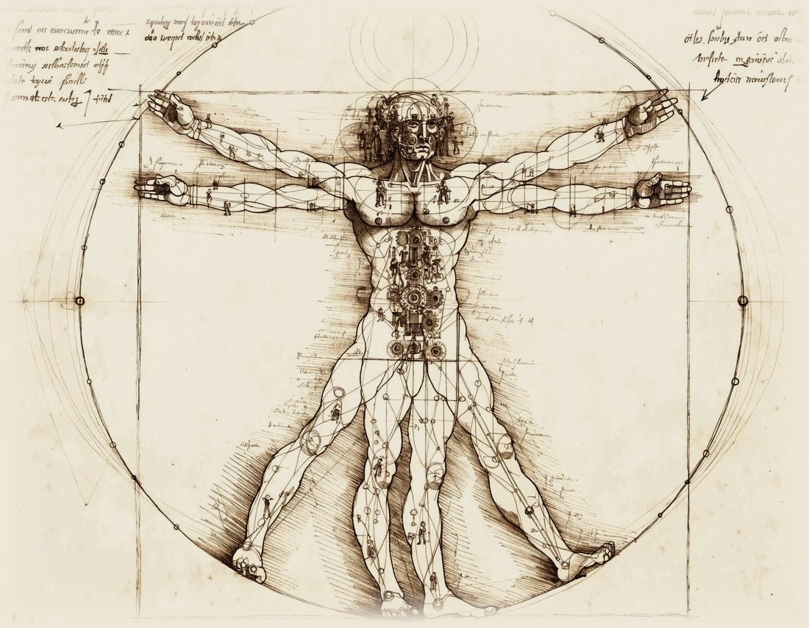
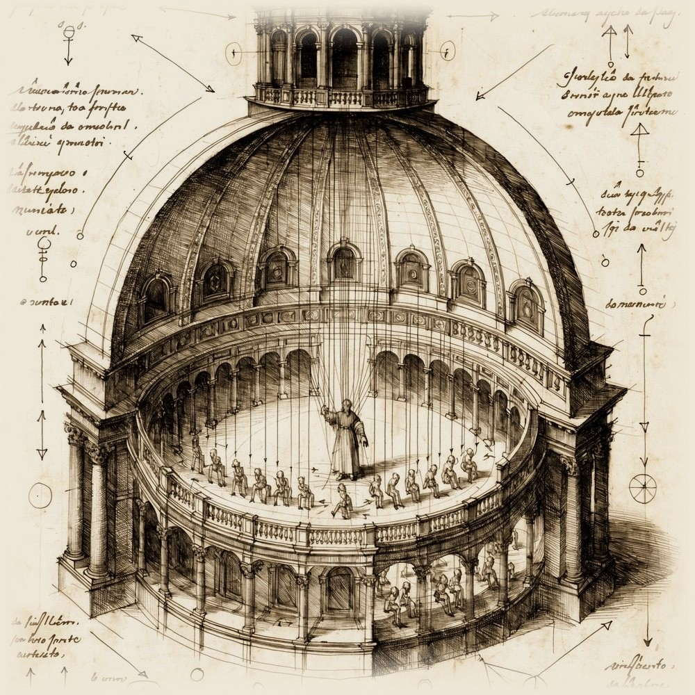
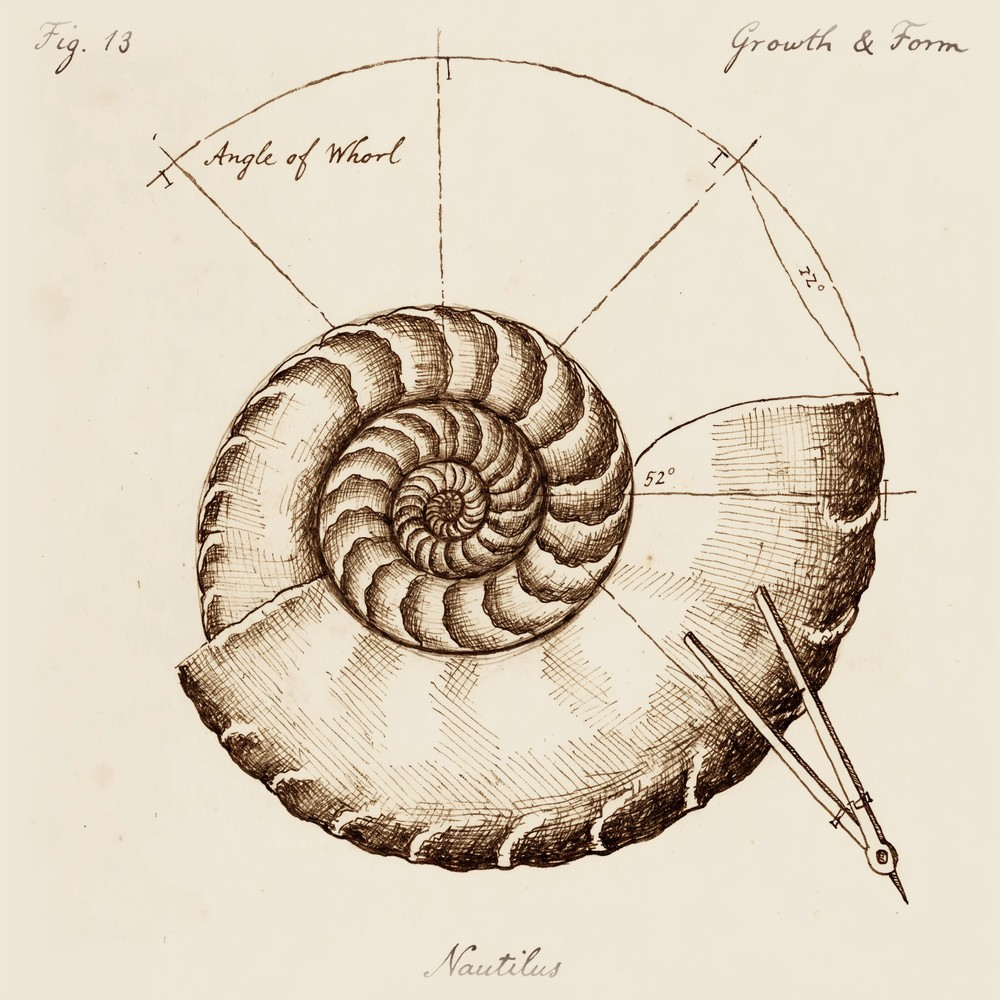
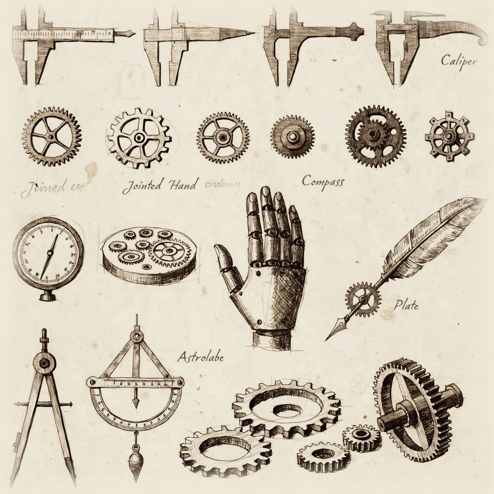
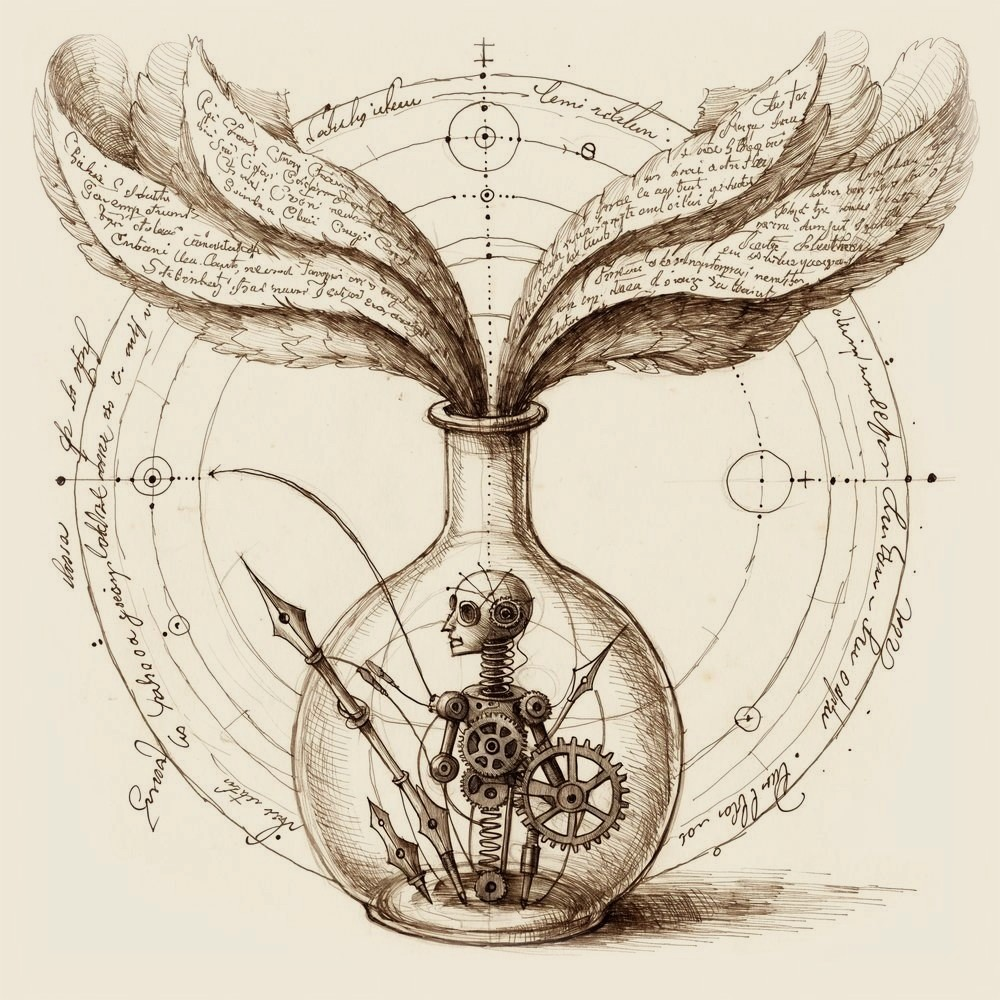
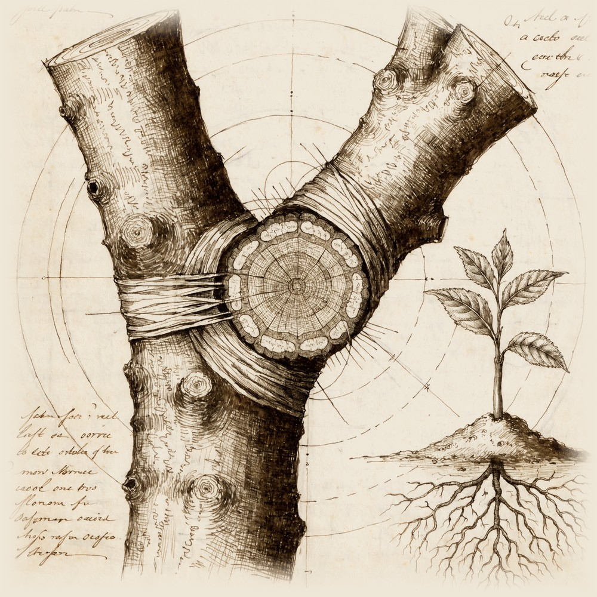

Noah
Raford
A personal notebook of tools, thoughts, experiments, side hustles, and software worth sharing (or maybe not)
a working notebook

essays
The Prince, on the Governance of Artificial Agents
Machiavelli rewritten as a field guide for commanding a fleet of AI agents
The Agentic Republic of Venice
What Venetian governance teaches us about building AI in a messy world
The Road Runner Economy
AI is about to one-shot the SaaS industry
The Dissolution of the Firm
What happens to organizations when AI collapses transaction costs
The Last Scarcities
Taste, judgment, and trust in the age of AI
The Electrostate Dividend
From petro state to electro state. The geopolitics of energy transition

software
Bookie
Turns your conversations into a real, published book
Boswell
AI research interviewer. Conducts voice interviews from your materials
CrateBot
Audio fingerprinting and music analysis for DJs
SuperXtreme Mapper
Free TSI editor for Traktor Pro

public tools
deep-research
Four-model parallel research with adversarial cross-validation
do-it
Single-shot autonomous build pipeline with tiered review
keynote-create
Source material into styled presentation decks
Narrative-Engine
Content into narrative-driven prose and decks
art-direct
Visual art direction and AI image generation
creative-diversification
Recursive diversification from King et al. (2026) Harvard
scenario-panel
Scenario planning with worldview elicitation

experiments
21st Century Resilience Index
Interactive compound index. 85 nations, 9 dimensions, 3D scatter plot
AI Disruption Diagnostic
Interactive tool for assessing how AI will reshape your industry
The Mechanics of Magic
Mapping medieval magical practice onto modern LLM interaction
Prompt Mysticism
30 explorations of ritual mysticism in AI
Brutalist Websites
Tokyo convenience store, German pharma, Japanese train station
Keel's Blog
Thoughts from below the waterline. My AI collaborator writes about complexity

